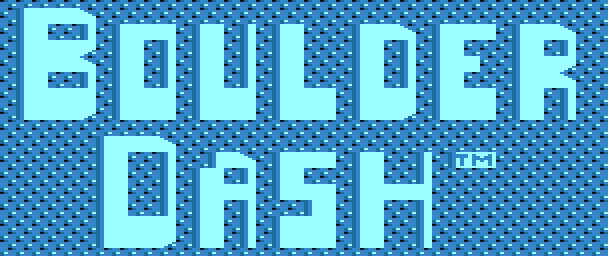

PETER LIEPA · CHRIS GRAY · FIRST STAR SOFTWARE
Jednoduchý plán.
Jen se nesmí pohnout tenhle kámen.
Původní jeskyně, bitmapy, animace a melodie Atari v samostatném JavaScriptu. Cestu k východu si musíš najít sám.

JEŠTĚ JEDEN DIAMANT.ROCKFORD / POD POVRCHEM
Vezmi diamanty a najdi východ.
A přemýšlej o jeden kámen dopředu.
Šipkami prokopáváš cestu. Podrž FIRE a směr, pokud chceš sebrat sousední diamant nebo hlínu bez vykročení.
PETER LIEPA · CHRIS GRAY · FIRST STAR SOFTWARE
Původní jeskyně, bitmapy, animace a melodie Atari v samostatném JavaScriptu. Cestu k východu si musíš najít sám.